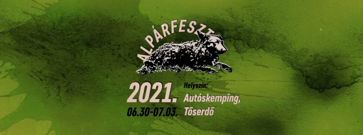
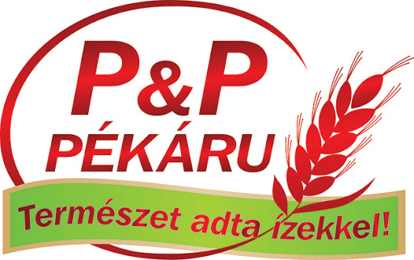
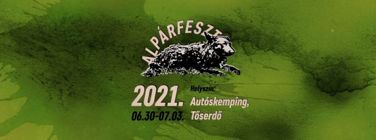
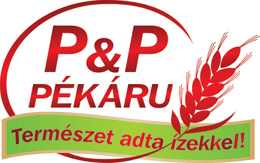

Számos munkahelyen dolgoztam és ezen belül különböző szférákban. A legelső munkámat egy diák szervezeten keresztül kaptam 16 évesen a kiskunfélegyházi P&P-nél, amely egy máig is müködő nagy pék üzem. Ott körülbelül két évig aktívan, rendszeresen dolgoztam hetente 1-2 alkalom. Alkalmanként pedig egy dekorosnál voltam kiségítő és beugró személy, aki segített a rendezvényekre a dekorációk elkészítésében, megvalósításában. Egy pár alkalommal a Tescoban is dolgoztam, mint árufeltöltő, de ezt a munkát fel kellett adnom a munka és az akkori lakóhelyem közötti távolság miatt. 18 évesen sikeresen eltudtam helyezkedni a vendéglátó iparban kisegítőként és pultosként. Két szezonon keresztül a kiskunfélegyházi Fábián cukrászdánál dolgoztam, kint az alpári úton, és eközben alkalmankánt vállaltam munkát a Rocktárnál, mint pultos. Az utóbbi esetben kisebb fesztiválokon is részt vettem, mint például: Alpárfeszt, Sörfeszt. Az utóbbi évben a Mars.Kft-nél dolgoztam, mint csomagoló, utána pedig munkahelyet váltottam és elmentem a Csongrádi Körös-torokra, mint pultos és konyhai kisegítő.
 


